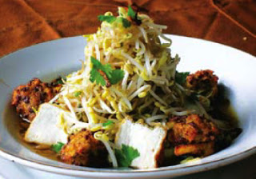
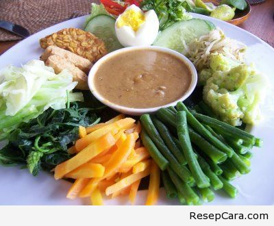
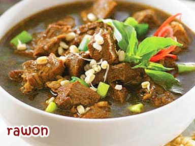
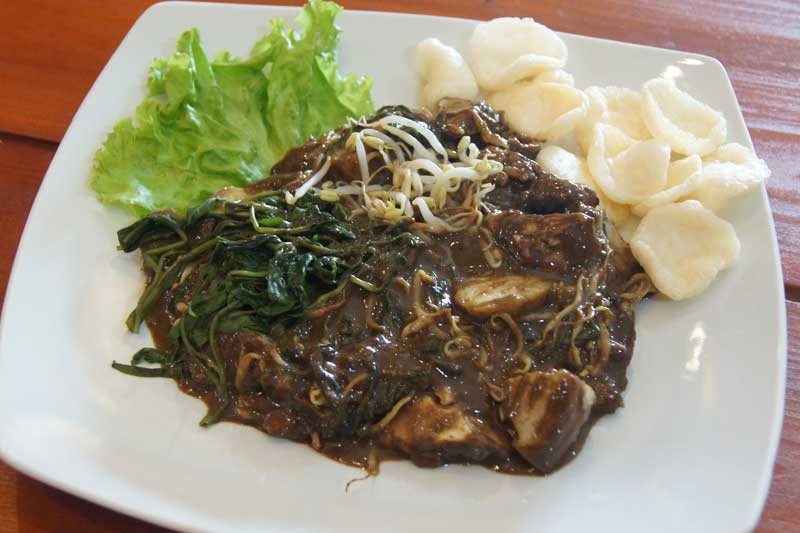
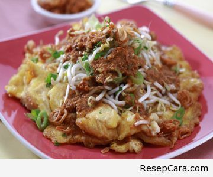

Makanan

Lontong Balap
Bahan Utama :
- 500gr Lontong yang dibuat dari nasi. Potong lontong sesuai selera.
- 500gr Tahu Goreng iris sesuai selera.
- Krupuk.
- 150gr Tauge.
Bahan untuk Kuah :
- 150gr udang dihaluskan.
- Air secukupnya untuk merebus udang sesampai menjadi kaldu.
- Minyak goreng secukupnya untuk menumis bumbu.
- 6 siung Bawang putih.
- 10 siung bawang merah.
- 1 sdm merica.
- gula,garam dan penyedap.
- 250gr udang utuk buat taburan.
- 50gr daun bawang dan seledri.
Bahan untuk lento :
- 50gr Kacang tolo.
- 250gr Singkong parut.
- 2 siung Bawang putih.
- 5 buah Cabe rawit.
- 2 siung Bawang merah.
- 2sdm Ketumbar bubuk.
- Putih telur.
- Garam secukupnya.
- Minyak goreng secukupnya untuk menggoreng.
- 10 buah Cabe rawit rebus.
- 4sdm Petis udang berkualitas.
- Kecap manis secukupnya.
- Air matang secukupnya.
- 3sdm Bawang goreng.
- 1sdm Bawang putih goreng
Cara Membuat :
- Pembuatan Lento
- Rebus kacang tolo sampai lunak.
- Haluskan bumbu, beri garam dan gula secukupnya.
- Tambahkan ke dalam parutan singkong, bumbu dan kacang tolo, kemudian buat adonan.
- Buat bulatan dan celup kedalam putih telur untuk digoreng. Goreng bulatan adonan yang telah dicelupkan telur sampai matang.
- Pembuatan Kuah
- haluskan udang rebus sebagai kaldu.
- Sisihkan kaldu rebusan udang
- Tumis bumbu.
- Masukan kaldu dan beri taburan udang untuk 250 gram tadi.
- Beri penyedap rasa secukupnya.
- Jika telah mendidih, masukan tauge dan beri taburan potongan daun bawang dan seledri. Angkat dan sisihkan.
- Pembuatan Sambal
- Haluskan semua bahan sambal.
- Campurkan kecap manis setelah sambal itu halus dan sisikan
Penyajian :
- Siapkan piring.
- Masukkan sambal petis yang dibuat, secukupnya atau sesuai selera.
- Beri sedikit kuah pada sambal petis.
- Masukkan potongan lontong.
- Masukkan irisan tahu goreng.
- Masukkan irisan lento.
- Tuang kuah plus udang didalamnya.
- Taburkan bawang goreng bila perlu.
- Beri krupuk sebagai pelengkap.
- Lontong balap siap dinikmati.
Pecel Madiun
Bahan Sambal Pecel :
- 250 gr kacang tanah yang telah digoreng dan dibuang kulitnya.
- 1 sdm air asam.
- 400 ml air hangat.
- 75gr gula merah (gula jawa).
- 1 sdt terasi.
- 6 lembar daun jeruk purut, hilangkan tulang daunnya.
- 4 buah cabe keriting.
- 5 buah cabe rawit.
- 5 siung bawang putih.
- 1sdt garam halus.
- 5cm kencur.
Cara Membuat :
- Haluskan dalam ulekan atau diblender bahan bumbu halus.
- Masukkan kacang tanah dan haluskan sampai lembut atau setengah lembut sesuai selera.
- Tambahkan air asam jawa 1 sendok makan saja (perpaduan antara 1 sendok teh asam jawa – 2 sendok makan air), aduk rata.
- Terakhir tambahkan air putih hangat, aduk lagi sampai merata.
- Sambal pecel madiun siap dihidangkan.
- Sambal pecel madiun ini pas dinikmati dengan nasi panas, ditambahi dengan kukusan beraneka sayur seperti kecambah/tauge, bayam, kangkung, daun singkong, kol,dan kacang panjang.
Rawon

Bahan Rawon :
- 500gr daging sapi (potong kecil).
- 2 batang daun Serai.
- Daun jeruk secukupnya.
- Daun salam secukupnya.
- Taoge secukupnya.
- 1 ruas lengkuas.
- Air bersih.
- Garam secukupnya.
- Minyak goreng secukupnya.
Bumbu Rawon :
- 3 siung bawang putih.
- 4 siung bawang merah.
- Daun bawang secukupnya (iris kecil).
- 3 buah kluwek (ambil bijinya).
- Kunyit dan jahe secukupnya.
- Ketumbar secukupnya.
- Asam dan garam secukupnya.
- 2 buah kemiri.
- 4 buah cabe merah.
Cara Membuat :
- Rebus air bersama dengan daun jeruk, serai, lengkuas dan daun salam. Lalu masukkan daging yang sudah dipotong kecil – kecil sampai empuk.
- Haluskan semua bumbu yang sudah disiapkan tadi. Lalu tumis bumbu tersebut sampai harum lalu angkat.
- Masukkan bumbu kedalam rebusan daging tadi, tambahkan sedikit garam serta gula, lalu aduk sampai benar-benar matang.
- Angkat dan rawon siap untuk disajikan.
Rujak Cingur
Bahan-bahan :
- 300 gr cingur ( tulang rawan hidung sapi ).
- 60 gr kangkung rebus ( dicuci bersih ).
- 60 gr tempe goreng.
- 60 gr toge yang sudah bersih ( rebus ).
- 60 gr tahu goreng ( potong dadu ).
- 100 gr kacang panjang rebus ( potong-potong ).
- 1 buah mentimun ( potong-potong ).
- 60 gr buah mangga muda ( potong dadu ).
- 75 gr bengkuang ( potong dadu ).
- 75 gr kedondong ( potong dadu ).
Bahan Sambal Petis :
- 2 sendok makan petis udang.
- 10 buah cabe rawit.
- 2 sendok makan kacang tanah goreng.
- 1 sendok makan asam jawa.
- 1/2 sendok teh terasi goreng.
- 1 buah pisang klutuk ( iris iris ).
- garam secukupnya.
- gula secukupnya.
- penyedap rasa secukupnya.
- air secukupnya.
Bahan Pelengkap :
- bawang goreng secukupnya.
Cara Membuat :
- Semua bahan sambal dicampur menjadi satu lalu dihaluskan.
- Siapkan mangkuk untuk menyajikan rujak cingur.
- Masukkan semua bahan kedalam mangkuk saji.
- Siram rujak cingur dengan kuah sambal petis.
Sajikan rujak cingur dengan taburan bawang goreng.
Tahu Tek
Bahan-bahan :
- 2 buah tahu putih, potong dadu 2 cm.
- 2 buah kentang, kupas, potong dadu 2 cm.
- 50gr tempe, potong dadu 2 cm.
- 75gr taoge, seduh air panas sampai lunak, tiriskan.
- 100 gram kol putih, iris halus.
- minyak goreng secukupnya.
Bahan Bumbu :
- 7 buah cabai rawit merah.
- 1 sdm garam.
- 75gr kacang tanah goreng.
- 2 sdm petis udang.
- 1 sdm gula merah iris.
- 100 ml air.
Bahan Pelengkap :
- Bawang goreng.
- Kerupuk bawang.
Cara Membuat :
- Ambil wadah mangkuk, kocok telur dalam mangkuk, lalu tambahkan potongan tahu kotak,potongan kentang rebus, dan garam serta lada putih bubuk, lalu aduk merata, kemudian bagi menjadi 3 atau bagian, sisihkan.
- Siapkan penggorengan tuang minyak secukupnya lalu panaskan , goreng adonan telur tadi seperti membuat telur dadar hingga matang dikedua sisinya,lalukakan demikian untuk adonan berikutnya, sisihkan.
- Untuk membuat saus , campurkan semua bahan-bahan bumbu , air matang bisa ditambah atau dikurangi sesuai keinginan untuk kekentalannya.
- Siapkan piring untuk penyajian, Letakkan dan atur, susun berurutan potongan lontong, potongan telur dadar, Tauge rebus kemudian siram dengan bumbu.
Kemudian Taburkan diatasnya irisan daun bawang, seledri serta bawang goreng juga kerupuk sebagai pelengkap, sajikan segera.